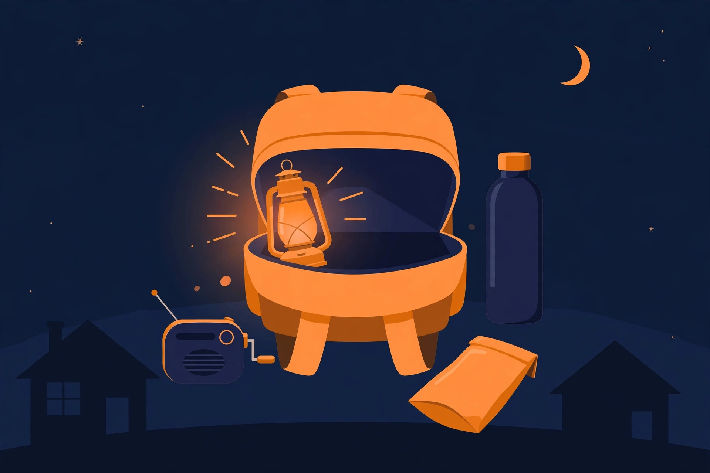
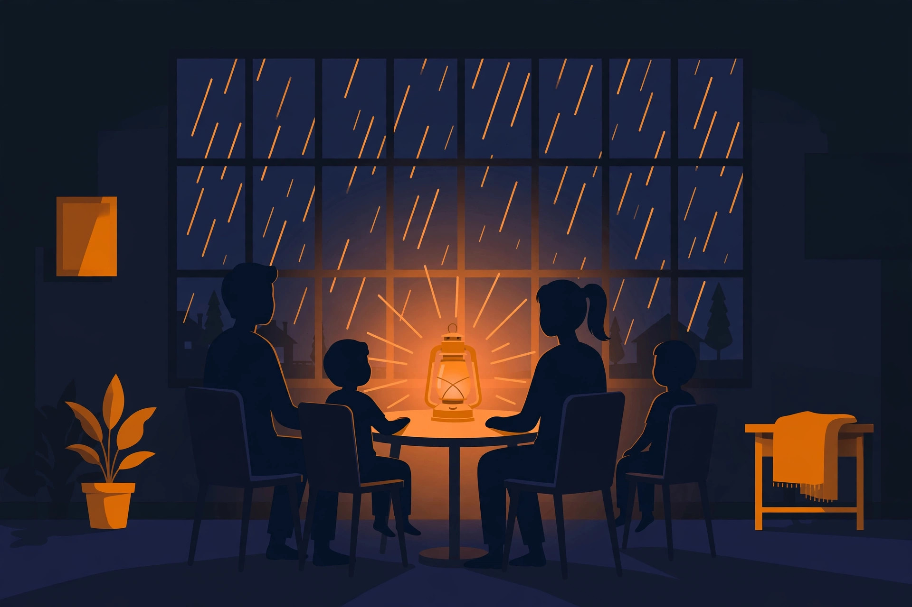
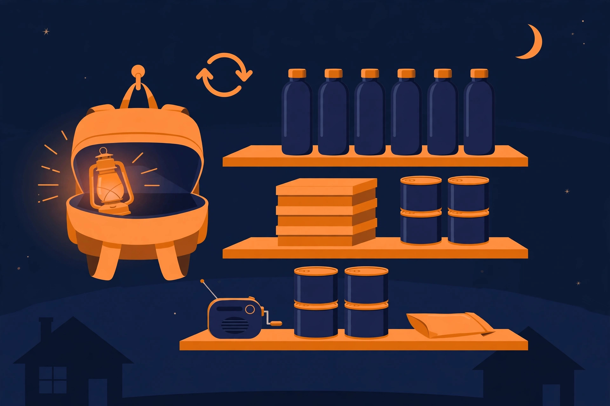

防災グッズのカイカタ｜「どの順で揃えるか」が9割

- 揃える順番は「最初の72時間 → 数日分 → 暮らしを戻す」。目立つ大型グッズより先に、水・トイレ・明かりの順で潰します
- 量の目安は「1人1日分」から逆算する。水は飲料で1日3L、トイレは1日約5回。家族の人数と日数を掛けるだけです
- 買って終わりにしない。食料と水は普段使いで回し（ローリングストック）、期限と電池は年2回見直す前提で揃えます
1. 防災グッズは「場面」から逆算する

停電の夜に困るのは、明かり・情報・スマホの電池。この3つから逆算します。
防災グッズの売り場に行くと、セット商品から単品まで棚いっぱいに並んでいて、何から手に取ればいいか分からなくなります。迷う原因は、商品から入ることです。先に決めるのは「どんな場面で困るか」の方で、商品はその後ろに付いてきます。
困る場面は、大きく3つに分けられます。この3つを頭に置くと、必要なものの優先順位が自然に決まります。
大きな揺れの直後は、割れたガラスの片付け、真っ暗な中での移動、断水したトイレがすぐに困ります。家具の転倒で、備蓄そのものに手が届かないこともあります。明かり・トイレ・水と、「出口に近い置き場所」が効く場面です。
浸水や交通の停止で、外に出られない・買いに行けない状態が続きます。停電を伴うことも多く、困りごとの中心は食料の持ちと明かり、情報の確保です。備蓄の「量」が効く場面です。
災害の種類を問わず、停電が長引くと明かり・情報・スマホの電池が少しずつ効いてきます。季節が冬なら寒さも加わります。電源の容量と、電源なしで使えるものの両方が効く場面です。
このページは「場面 → 順番 → カテゴリ別の品」という流れで組み立てました。後半には、タップで使えるチェックリスト（4）も置いてあります。「自分の家に何が足りないか」を確かめながら読んでください。
2. 揃える順番：3つの段階
一度に全部そろえようとすると、費用も置き場所も膨らんで続きません。段階に分けると、どこまで進んだかが分かり、買い足しも楽になります。
水・トイレ・明かり・情報。自力でしのぐ前提の、最小構成です。まずここを終わらせます。
食料の量、給水の手段、洗えない日の衛生。ライフラインの復旧を待つ期間の備えです。
電源の容量アップ、寝る環境、家族の事情別。長引く避難生活の「質」を守る備えです。
各段階で迷うのが「量」です。目安はどれも「1人1日分」が起点です。
飲料水の目安は1人1日3L（調理に使う水は別で考えます）。3日分なら1人9L、家族4人で36Lです。保存水の本数は、ここから逆算します。
食べる量より先に決まるのが、トイレの回数です。1日約5回が目安で、2人×7日なら70回分。簡易トイレの「○回分」という表示は、この計算で見ます。
最初の3日は、火も水も惜しい場面です。主食（注ぐだけ・開けるだけ）に、甘いものを少し足すと気持ちが持ちます。家族の食べられないものは、先に外しておきます。
ランタンは部屋用に1つ、ヘッドライトは人数分。ラジオは1台で家族共用です。乾電池の予備は、明かりと同じ場所にまとめて置きます。
※ 量は一般的な目安です。家族構成や、お住まいの自治体のハザードマップの想定に合わせて調整してください。
3. カテゴリ別ガイドと選んだもの（36品）
価格は変動するので載せません。代わりに「なぜこれか」の理由を書きました。★とレビュー件数は、2026年11月時点の確認です。気になる品は、各カードのボタンで買い物メモに入れておくと、後からまとめて見返せます。
保存水は「飲む水」、給水袋は「もらいに行く水」、浄水器は「最後の手段」。役割が違うので、どれか1つでは足りません。まず保存水で量を確保し、運ぶ容器を足す順番です。
備蓄水の本命です。500mlは配りやすく、持ち出しや車にも分けやすい形。★4.3・レビュー2,113件、過去1か月で4,000点以上購入されています（2026年11月時点）。「水はまず量」という、備えの最初の1品に。
自宅備蓄の主力は2Lです。料理や衛生に使う「使う水」は、大容量でないと回りません。★4.3・レビュー1,183件、過去1か月で3,000点以上購入（2026年11月時点）。500mlタイプとの使い分けが基本形です。
2L×9本で18L、「1人1週間（飲料分）」の目安に届く構成です。ミネラルウォーターのカテゴリでベストセラー1位の表示がある、まとめ買いの受け皿（2026年11月時点）。
断水時の給水所通いに使う「運ぶ容器」です。保存水だけでは足りず、水をもらう袋がないと、並んでも持ち帰れません。背負えて、使用後は折りたためる点が細部の差。★4.0・レビュー127件（2026年11月時点）。
断水が長引いたときの最後の手段です。★4.2・レビュー2,420件（2026年11月時点）。あくまで緊急時のろ過用で、日常の水の代わりにするものではありません。備えの「保険」として位置づけてください。
最初の3日は「水か湯を注ぐだけ」「開けてすぐ食べられる」の2種類で組みます。主食が単調だと食べる量そのものが落ちるので、味の幅と甘いものを少し。子どもが食べ慣れた味かどうかも、量と同じくらい大事です。
非常食の顔です。水か湯を注ぐだけで主食になります。12種類あると「飽き」が来ないことは、数日単位の生活では実は切実。★4.3・レビュー7,783件（2026年11月時点）の定番です。
水を注いで袋のまま握れるので、手を汚さず食べられます。衛生環境が悪い場面ほど「手で触らない主食」の価値が上がります。★4.4・レビュー745件、過去1か月で1万点以上購入（2026年11月時点）。持ち出し袋の主食はこちらが本命です。
開けてすぐ食べられるパンは、調理用水すら惜しい初動と、子どもの「今すぐ食べたい」に応えます。カンパンと違う、しっとり系で食べやすいタイプ。★4.4・レビュー627件（2026年11月時点）。
缶入りの乾いた焼き菓子は「主食の合間のつなぎ」と子どものおやつです。甘いものの有無は、避難生活の気持ちの持ち直しに直結します。★4.2・レビュー1,408件（6缶セットの数値、2026年11月時点）。
1本でカロリー補給できる、保存食の古典です。水がなくてもそのまま食べられ、ポケットに入ります。★4.4・レビュー2,499件、過去1か月で3,000点以上購入（2026年11月時点）。食欲が落ちたときの糖分補給にも。
普段食べ慣れた味が、缶で5年持ちます。子どもが「知らない味」を拒む問題への答えで、ローリングストックの入口にもなる1品。★4.4・レビュー843件（2026年11月時点）。
明かりは「部屋全体を照らすランタン」と「両手が空くヘッドライト」で役割が違います。電源は、スマホだけならモバイルバッテリー、冷蔵庫や電気毛布まで考えるなら1000Wh級のポータブル電源、という境目で見ます。
1000Wh級は、冷蔵庫・電気毛布・医療機器のバックアップまで守備範囲が広がる境目です。パネル付きで「停電が何日続くか分からない」場面に応える構成。★4.3・レビュー868件、カテゴリ売れ筋1位（2026年11月時点）。
54分の急速充電が効くのは「計画停電・一時復旧の合間」です。短い復旧のタイミングで満充電に戻せることが、長引く停電ほど効きます。カテゴリ売れ筋2位、過去1か月で400点以上購入（2026年11月時点）。Jackeryとの2強比較でどうぞ。
パネル単品は「電源はもう持っている」人の買い足しです。USB出力もあり、スマホだけなら電源本体なしでも回せます。★4.3・レビュー2,292件（2026年11月時点）。
停電の夜に部屋全体を照らすのは、ランタンの役目です。懐中電灯と違い「生活の明かり」。乾電池式は、電池さえあれば使える安心感があります。★4.4・レビュー1,228件（2026年11月時点）。モデルが分かれるシリーズなので、リンク先で電池式・充電式を確認してください。
両手が空くことは、片付け・移動・トイレ通いの全部で効く細部です。ランタンと役割を分けて、こちらは人数分が目安。★4.1・レビュー1,955件（2026年11月時点）。
断水で真っ先に詰まるのがトイレです。回数の目安（1人1日約5回）で必要量を決め、臭い対策のあるものを選ぶと、在宅避難が続けやすくなります。洗えない日のための衛生用品も、同じカテゴリで考えます。
断水時に真っ先に困るのがトイレです。抗菌凝固剤で15年保存。「2人家族で7日分」という設計が、必要回数（1人1日約5回）で考える入口になります。★4.2・レビュー5,288件、過去1か月で5,000点以上購入（2026年11月時点）。
簡易トイレの不快感の大半は「臭い」です。凝固剤のセットに、医療由来の防臭袋BOSを組み合わせた構成で、在宅避難が続けられるかどうかを左右する細部。100回分の設定もあります。
便座に被せる処理袋＋凝固剤のタイプです。大手メーカー製で揃えたい人向けの選択肢で、同社の防災ラインでまとめると管理が楽になります。
断水時は「手と食器と体」を拭くものが、水の代わりになります。ノンアルコールは、子どもの手や口まわりにも使いやすいタイプ。消費が速いので大容量一択です（Amazon.co.jp限定の詰替）。
入浴できない日が続くと、頭の不快感は想像以上に堪えます。水のいらないシャンプーの代表格で、衛生というより生活の質を守る1品。★4.4（ボトル250mL×3個セットのレビュー24件、2026年11月時点）。
冬の停電は、暖房が止まることより「体温を逃がさない」発想が先です。電源なしで使えるものだけを集めました。なお、このカテゴリの汎用品には近所の店で買えば足りるものもあります（正直な線引きは下の7へ）。
体温を逃がさないためのシートです。静音タイプは、避難所の夜にカサカサ音で眠れない問題への答え。★4.3・レビュー2,070件（2026年11月時点）。アルミシート自体は100円ショップにもありますが、「静音」のような種類を選ぶなら、ネットで買う意味があります（線引きは7へ）。
停電と真冬の夜に、電源なしで体を温められる数少ない手段です。★4.4・レビュー8,073件（2026年11月時点）の定番で、平時は冬の常備品としてローリングできます。冬支度特集でも紹介している品です。
貼らないタイプは、ポケット・靴下・寝袋の中と使い回しが利きます。必要枚数は「家族の人数×日数」で数えるのが先。★4.4・レビュー1,819件（2026年11月時点）。
普通のカイロと違い、未開封で7年保存できる長期保存専用品です。「備蓄専用に置いて、期限だけ管理したい」ならこちら。普段使いと兼ねるなら、上の2品のようにローリングできる定番が向きます。
停電や通信の混雑でスマホが頼れないとき、自治体の情報を拾うのはラジオです。スマホの電池を守るモバイルバッテリーと、セットで考えます。
スマホの電波が不安定なとき、自治体の情報はラジオが一番確実です。手回し・ソーラー・USBの3Way充電で、スマホへの給電も兼ねます。225gと軽く、ダイヤル式で慌てていても迷わない作り。★4.1・レビュー約500件（2026年11月時点）。
XLN-383の上位モデルです（5000mAh・デジタル選局）。「スマホを何回充電できるか」を重視するなら容量で選ぶ、という比較軸の1台。★4.1・レビュー234件（2026年11月時点）。
連絡手段であるスマホの電池を守る、最小構成の中心です。ポータブル電源までは要らない一人暮らしの備えに置けます。★4.4・レビュー7,781件、カテゴリ売れ筋1位（2026年11月時点）。
セット品は「何から揃えればいいか分からない」の入口です。中身の軸が「逃げる」か「過ごす」かで選ぶと、単品の買い足し方も決まってきます。
「何から揃えればいいか分からない」の入口になる一式です。給水バッグ・携帯トイレ入りで、単品買い足しの土台になります。★4.2・レビュー477件（2026年11月時点）。色で型番が分かれるので、リンク先で確認してください。
エアー枕付きなど「避難所での睡眠」まで含む構成です。山善との比較は「一次避難（逃げる）」か「避難生活（過ごす）」かの軸で。★4.3・レビュー846件（2026年11月時点）。
床で寝る避難生活で差が出るのは、エアベッドと枕です。「寝る環境」まで含めた上位セット。過去1か月で1,000点以上購入、★4.3・レビュー389件（2026年11月時点）。
赤ちゃん、高齢の家族、ペットは、備えの「本体」が別に要ります。一般の非常食がそのまま使えない相手がいる家は、ここを先に潰してください。
断水時は、粉ミルクを溶く水も、哺乳瓶を洗う水もありません。液体ミルクは「調乳不要・常温・そのまま飲ませられる」が全部入り。賞味期限は約9〜10か月と短めなので、ローリングストック前提で考えてください。自治体の備蓄リストにも採用例があります。
液体ミルクだけあっても、洗えない状況では飲ませる容器がありません。「ミルクと哺乳瓶は2点で1組」という、忘れられがちな細部の代表例です。★3.6と評価は分かれますが、使い捨て哺乳瓶の代表格です（2026年11月時点）。
高齢の家族がいる家では、通常の非常食（固い・乾いたもの）が食べられないことがあります。常温保存のレトルトで、普段の食事の延長としてローリングできるタイプ。★4.0、過去1か月で1,000点以上購入（2026年11月時点）。
ペットの備蓄は後回しにされがちですが、避難所ではペットフードの配給はありません。未開封・常温で約2年保存できるウェットフードは、「いつものフード＋α」の備えになります。
ペットの飲み水は人用備蓄から回す想定が多いものですが、軟水のペット専用水を用意しておくと「人の分を削る」判断をしなくて済みます。★4.5・レビュー10件と、件数は少なめです（2026年11月時点）。
4. 備えチェックリスト
上の36品を眺めるだけでは、自分の家の抜けは分かりません。このリストで「ある／ない」を仕分けると、足りないカテゴリが見えてきます。全36項目です。
すでに備えてあるものからタップしてください。当てはまらない項目（ペットがいない等）は、チェックを付けて「対象外」として進めて大丈夫です。状態はこのブラウザに保存されるので、買い足すたびに戻ってきて更新できます。
まだチェックが付いていません。すでに備えてあるものから、タップして付けていってください。
5. 置き場所とローリングストック
備えは「買う」より「回す・置く」で差が出ます。期限切れの山を作らないための、実務的な組み立てです。

買って終わりにせず、使いながら回すのがローリングストック。置き場所とセットで考えます。
ローリングストックは、普段の買い物で少し多めに買い、いちばん古いものから使う回転方式です。非常食専用品と違い、期限切れのまま放置されにくいのが利点。液体ミルク（賞味期限 約9〜10か月）や普段のお菓子は、この方式が前提になります。
目安は、普段の消費の1週間分を余分に持つことです。使い切る前に買い足すと、在庫がゼロになる瞬間がありません。保存缶のような長期保存品は「期限が来たら普段使いに下ろす」だけでも、回転に入ります。
玄関近くの「持ち出し用」、キッチン横の「在宅避難用」、車と職場の「分散用」に分けます。地震で家具が倒れる部屋の奥は避け、夜でも手が届く場所が基本です。
保存水の箱は床近くに置きます。期限管理が要る食料は、普段開ける棚の手前に置くと、見直しが習慣になります。
飲料は保存水、調理・衛生は2Lの大容量や給水でまかないます。分けて考えておくと、飲む水を生活用水で使い切ってしまう失敗が減ります。
※ 賃貸などで置き場所が限られる場合は、まず「持ち出し用」だけでも出口の近くに分けてください。
6. 見直しのタイミング
備えは、置いた瞬間から古くなります。見るポイントと間隔の目安をまとめました。
| 対象 | 見るポイント | 間隔の目安 |
|---|---|---|
| 保存水・非常食 | 賞味期限。近づいたら普段使いに回し、買い足します | 年2回（春・秋） |
| 液体ミルク | 賞味期限が約9〜10か月と短め。ローリングの先頭に | 3か月に1回 |
| 簡易トイレ | 凝固剤の保存年数（15年保存の品もあります） | 年1回 |
| ランタン・乾電池 | 点灯確認と電池の液漏れ。電池は入れ替えます | 年2回 |
| モバイルバッテリー・ポータブル電源 | 残量の確認（保管時の残量は、製品の指示に従ってください） | 3か月に1回 |
| 使い捨てカイロ | 使用期限。備蓄専用は7年保存の品もあります | 年1回 |
| リュックの中身 | 季節の入れ替え（寒さ対策と暑さ対策）と、子どもの成長に合わせたサイズ | 年2回 |
※ 間隔は目安です。防災の日（9月1日）や3月11日など、覚えやすい日を「見直しの日」に決めておくと続きます。
7. 締切と心構え：セールとの線引き
防災グッズに「締切」はありません。いつ来るか分からない以上、考え方は普通の買い物と逆になります。ここは正直に線を引いておきます。
保存水、簡易トイレ、ランタン、防災ラジオ、モバイルバッテリー。「無いと、その日から困る」ものです。価格の差より先に「あること」が大事で、ブラックフライデーのようなセールを待つ理由はありません。
ポータブル電源、ソーラーパネル、防災セットの買い増し、予備の備蓄。「すでにある程度そろっている」前提の上積み分は、セールで型番を照合してから買うのが向きます。
アルミブランケットの単品、普通の使い捨てカイロ、乾電池は、100円ショップやドラッグストア、コンビニでも同等品が買えます。このページで載せたのは「静音タイプ」「7年保存」のように、種類や保存年数を選ぶ意味があるものだけです。ウェットティッシュのような汎用品も近所で足りますが、大容量の詰替だけは、まとめ買いの受け皿として載せました。
8. よくある質問
Q. まず何から買えばいいですか？
Q. 何日分そろえればいいですか？
Q. 防災セット（リュック一式）と単品買い、どっちがいいですか？
Q. 賞味期限の管理が続きません。
Q. マンション住まいでも、簡易トイレは要りますか？
Q. セールで安くなるのを待った方がいいですか？
関連する特集
Amazonのセールは、仕組みと順番を知らないと損をする。その「歩き方」を特集で案内しています。日々の値動きは価格の流れを確認してから、本当に安いものだけをXで速報しています。
Xで速報を受け取る（@A_KAIKATA）Amazonのアソシエイトとして、カイカタは適格販売により収入を得ています。
このサイトについて｜プライバシーポリシー